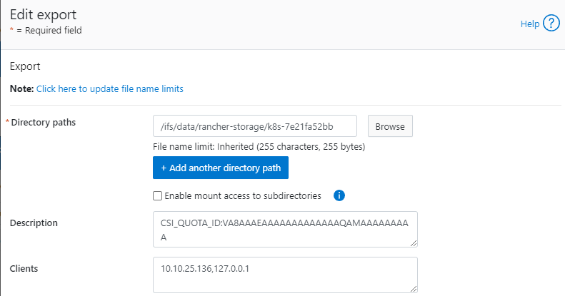
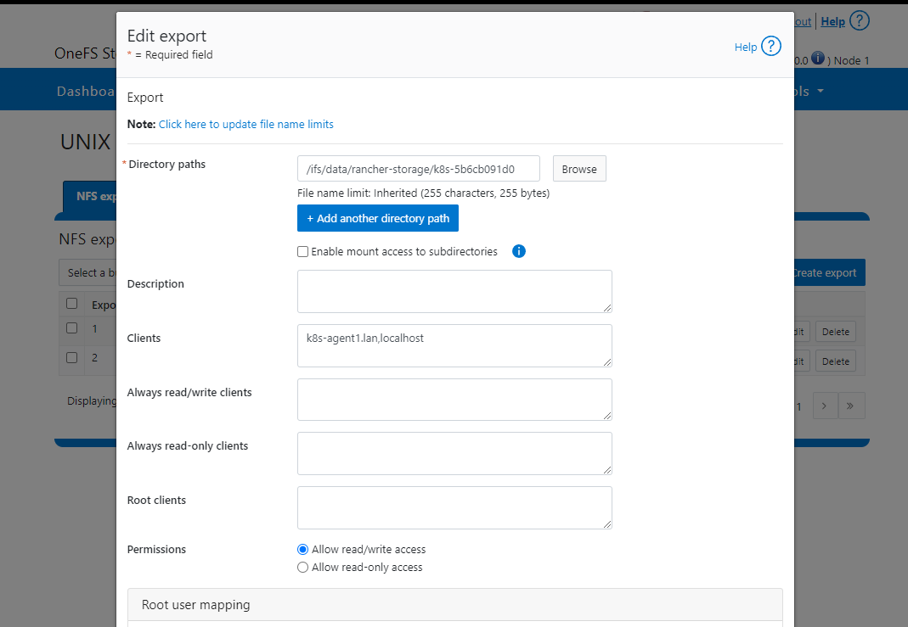
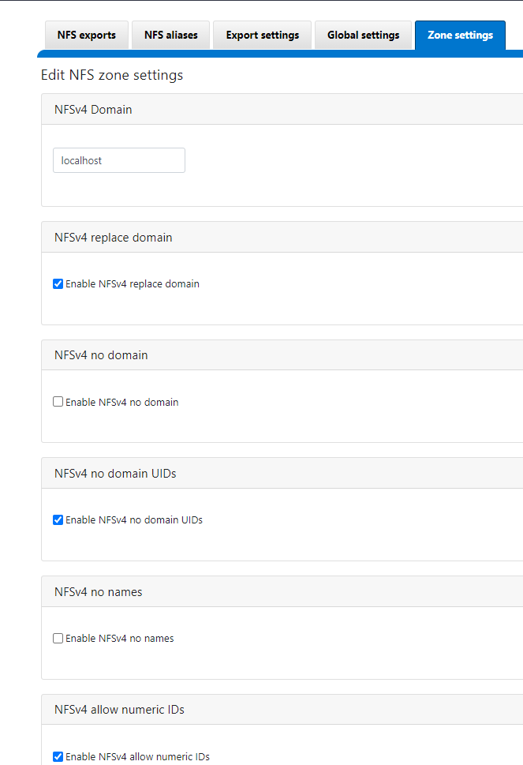
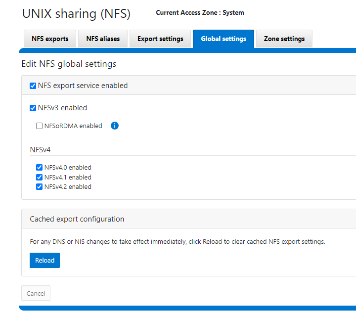

Powerscale CSI Bug
Problem Description
Customer reporting that when they attempt to write to an NFS mount via CSI driver inside a container they immediately receive access denied. We are unsure of root cause but Dell staff were able to reproduce and when working with the developers determined the fix action is to use IP addresses in the NFS export:

Permanent Fix
Instead of manually updating each export users can enable ignoreUnresolvableHosts in their values.yml file during installation. By doing this the CSI driver will always use IP addresses fixing the issue until we completely a root cause analysis.
Problems with Permanent Fix
If the K8s worker node IPs change, the PVC must be refreshed (this likely will happen anyway when you change the IP) or the PVC mounts on PowerScale must be manually updated.
Details
- Confirm PVC is built
[root@k8s-server tmp]# kubectl get pvc
NAME STATUS VOLUME CAPACITY ACCESS MODES STORAGECLASS AGE
test-pvc Bound k8s-5b6cb091d0 1Gi RWO isilon 4h4m
- Create a test pod which outputs anything to NFS mount:
[root@k8s-server tmp]# cat test-pod.yaml
apiVersion: v1
kind: Pod
metadata:
name: test-pod
spec:
containers:
- name: test-container
image: busybox
command: ["/bin/sh", "-ec", "while :; do echo $(date) >> /mnt/data/out.txt; sleep 5; done"]
volumeMounts:
- name: test-volume
mountPath: /mnt/data
volumes:
- name: test-volume
persistentVolumeClaim:
claimName: test-pvc
[root@k8s-server tmp]# kubectl apply -f test-pod.yaml
pod/test-pod created
- Check test pod - confirm access denied
[root@k8s-server tmp]# kubectl describe test-pod
error: the server doesn't have a resource type "test-pod"
[root@k8s-server tmp]# kubectl describe pod test-pod
Name: test-pod
Namespace: default
Priority: 0
Service Account: default
Node: k8s-agent1.lan/10.10.25.136
Start Time: Tue, 05 Dec 2023 21:26:11 -0500
Labels: <none>
Annotations: <none>
Status: Pending
IP:
IPs: <none>
Containers:
test-container:
Container ID:
Image: busybox
Image ID:
Port: <none>
Host Port: <none>
Command:
/bin/sh
-ec
while :; do echo $(date) >> /mnt/data/out.txt; sleep 5; done
State: Waiting
Reason: ContainerCreating
Ready: False
Restart Count: 0
Environment: <none>
Mounts:
/mnt/data from test-volume (rw)
/var/run/secrets/kubernetes.io/serviceaccount from kube-api-access-2n2rn (ro)
Conditions:
Type Status
Initialized True
Ready False
ContainersReady False
PodScheduled True
Volumes:
test-volume:
Type: PersistentVolumeClaim (a reference to a PersistentVolumeClaim in the same namespace)
ClaimName: test-pvc
ReadOnly: false
kube-api-access-2n2rn:
Type: Projected (a volume that contains injected data from multiple sources)
TokenExpirationSeconds: 3607
ConfigMapName: kube-root-ca.crt
ConfigMapOptional: <nil>
DownwardAPI: true
QoS Class: BestEffort
Node-Selectors: <none>
Tolerations: node.kubernetes.io/not-ready:NoExecute op=Exists for 300s
node.kubernetes.io/unreachable:NoExecute op=Exists for 300s
Events:
Type Reason Age From Message
---- ------ ---- ---- -------
Normal Scheduled 19s default-scheduler Successfully assigned default/test-pod to k8s-agent1.lan
Normal SuccessfulAttachVolume 19s attachdetach-controller AttachVolume.Attach succeeded for volume "k8s-5b6cb091d0"
Warning FailedMount 2s kubelet MountVolume.SetUp failed for volume "k8s-5b6cb091d0" : rpc error: code = Unknown desc = mount failed: exit status 32
mounting arguments: -t nfs -o rw 10.10.25.80:/ifs/data/rancher-storage/k8s-5b6cb091d0 /var/lib/kubelet/pods/e1bb5844-f482-4dfa-b4b0-0aa8225a316b/volumes/kubernetes.io~csi/k8s-5b6cb091d0/mount
output: mount.nfs: access denied by server while mounting 10.10.25.80:/ifs/data/rancher-storage/k8s-5b6cb091d0
Isilon Server Config
- Permissions for the mounted PVC folder

- NFS Zone Settings

- Global NFS Settings

K8s Config
Exactly how I built the K8s cluster is available here